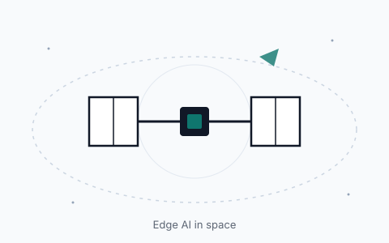
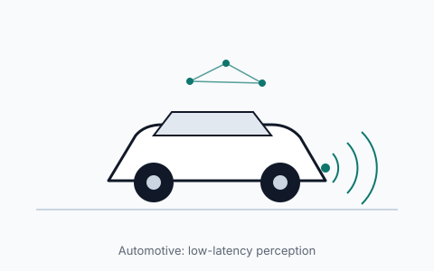
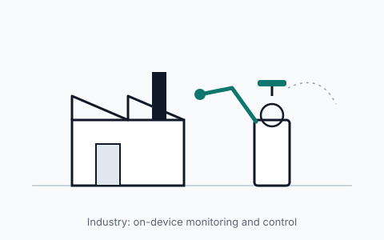

Space
On-board processing lets satellites filter and analyse data before sending it down, saving bandwidth and power. Hardware here must also tolerate radiation and extreme temperatures.
Hodgkin-Huxley Labs is an early-stage initiative building an NPU accelerator for edge-AI inference. We are a community of students and professionals developing a prototype and design, with the goal of growing into a start-up that runs neural networks locally, with low latency and high efficiency.
Running neural networks on the device itself, rather than in the cloud, reduces latency and keeps systems working when the connection is weak. Our focus is the efficiency of the computation, so that more inference fits into less power and silicon.
Devices that decide locally, without depending on a remote server.
Faster responses for time-critical tasks such as automotive and health monitoring.
Reducing the cost of each operation so that complex models run on small hardware.
Researching the individual intellectual-property components that make up an accelerator.
The same goals apply in very different places: a satellite with no room for error, a car that must react in milliseconds, and a factory floor that runs around the clock.

On-board processing lets satellites filter and analyse data before sending it down, saving bandwidth and power. Hardware here must also tolerate radiation and extreme temperatures.

Driver assistance and autonomous functions depend on perception decisions that arrive in fractions of a second, without waiting on a network connection.

Machines that monitor themselves, spot faults early, and control motion locally keep production running and reduce downtime.
We will show every figure here so that supporters can see where funds come from and how they are used.
Money raised
$0
Money spent
$0
Figures are updated manually. Last updated 7 November 2026.
We profile the companies building NPUs and edge-AI chips, what they have made public, and how the market is expected to grow. Every figure is linked to its source and dated.
Tell us a little about yourself. We will reply by email with the invitation to our Discord community.